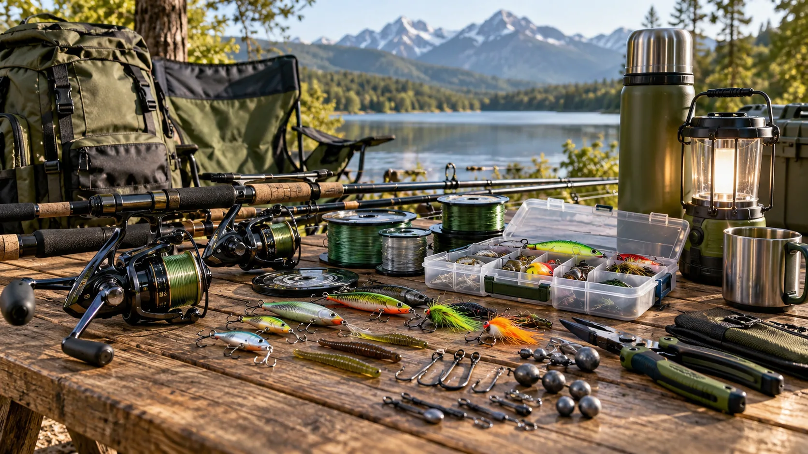
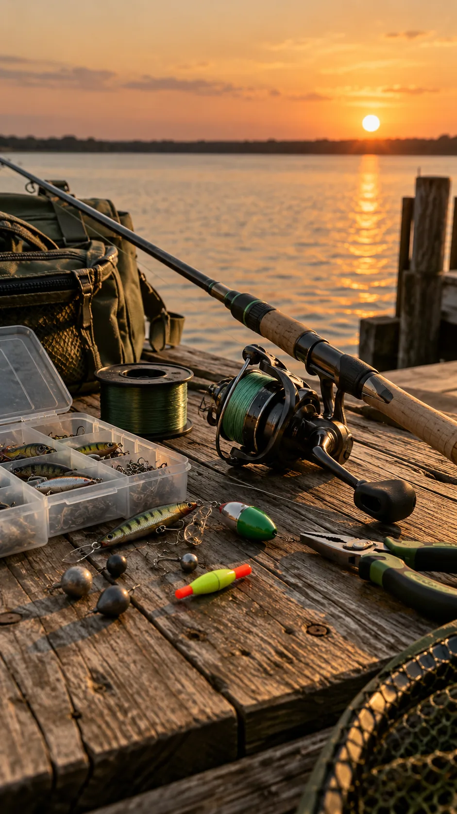

Todo listo para la próxima salida.
Reels, cañas, tanzas, boyas, señuelos, cajas y equipo de camping para seguir haciendo lugar a tu pasión.
TU PASIÓN, NUESTRA PASIÓNElegí el equipo para salir.
Los artículos muestran cómo quedaría la tienda. Modelos, precios y disponibilidad se confirman antes de publicar.
Del primer lance al último mate.
Entrá por rubro y encontrá los accesorios para tu próxima jornada.

Enganchados con la pesca.
Los Fantasmas de la Pesca es un emprendimiento familiar de accesorios para pesca y camping. Queremos que puedas ver el equipo por rubros, comparar opciones y consultarnos por lo que necesitás.
«Tu pasión, nuestra pasión»
Ir al catálogo ↗Mirá el equipo de cerca.
Las demostraciones y salidas están en nuestros videos de Instagram. Cuando estén los clips originales, se podrán ver también acá.
¿Qué te falta para la próxima salida?
Guardá tus artículos en la selección o escribinos directo. Te confirmamos modelos, precios y disponibilidad.